SĂN BẮN BAN NGÀY
Nghệ thuật săn bắn ban ngày gồm có:
- Phán đoán
- Phát hiện
- Tiếp cận
- Bắn hạ
I. PHÁN ĐOÁN
Những người thợ săn có kinh nghiệm, không bao giờ họ đi hú hoạ, vừa tốn sức, vừa không chắc ăn. Trong khu rừng quen thuộc của họ, họ biết chỗ nào có loại chim thú nào. (Ngoài trừ các loại chim thú di cư, còn các loại chim thú địa phương thì ít khi rời quá xa địa bàn cư trú của mình). Họ còn biết những nơi chim thú thường lui tới để kiếm ăn, săn mồi, uống nước… Cho nên khi muốn săn loại thú nào, họ có thể đi thẳng đến khu vực đó.
Sau vài lần đi săn ở những vùng xa lạ, các bạn cần phải ghi nhớ những khu vực nầy. Có khi hôm nay các bạn bắn hụt một con thú ở khu vực nầy, ngày mai các bạn vẫn còn có thể gặp lại nó lảng vảng ở trong khu vực đó.
Có những loài thú đi ăn và về theo một lộ trình nhất định, tạo thành những con đường mòn như những cái hang dài ở dưới đám cỏ dầy đặc như: chồn đèn, chuột, nhím… Cũng có những loài rất cảnh giác, không bao giờ ăn cùng một địa điểm như: sơn dương, rái cá, bò tót… và một số thú lớn khác.
PHÁT HIỆN
Để phát hiện được con mồi, các bạn cần phải lý giải được những dấu vết do con thú để lại như: dấu chân, phân, lông, bùn sình dính trên thân cây, cỏ cây bị dập nát, đất bị đào xới, mùi hương đặc trưng… hoặc ngay chính tiếng kêu của nó. (Nếu không đi rừng nhiều, các bạn vẫn có thể phân biệt được tiếng kêu của nhiều loại thú khác nhau nhờ các bộ phim về động vật).
Nếu con thú đang ở gần bạn, bạn có thể nghe được tiếng cành khô bị đạp gãy, tiếng lá cây, rể cây… bị cắn bứt, tiếng thở phì phò, tiếng lá khô xào xạc…
Nếu nghe tiếng chim te te đánh ở trảng cỏ hay rừng chồi, thì chắc chắn ở đó đang có một người hay thú đi qua (loài chim nầy không ở trong rừng rậm). Hoặc bầy chim đang ăn chợt vụt bay một cách hoảng hốt…
TIẾP CẬN
Để tiếp cận được với con mồi, các bạn phải biết cách đánh lừa, ẩn nấp và nguỵ trang. Có nghĩa là các bạn phải biết hoà mình vào với cảnh vật chung quanh, từ màu sắc cho đến mùi hương.
- Dùng đất sét, tro, than, nhọ nồi… bôi loang lổ những chỗ da không có áo quần che phủ như hai bàn tay, hai chân, khuôn mặt…
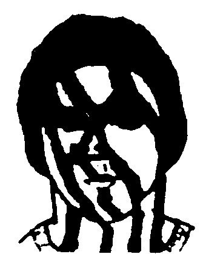
- Áo quần phải đồng màu với cảnh vật thiên nhiên quanh ta.
- Không mang theo nón mũ hay khăn quàng có màu sắc sặc sỡ, hoặc các trang sức phản chiếu ánh sáng mặt trời (đồng hồ, mắt kính, dây chuyền…)
- Không mang theo những vật dụng dễ gây tiếng động như: chùm chìa khoá, bình đựng nước bằng nhôm, các vật dụng bằng kim loại….
- Không sử dụng dầu gió, nước hoa, các hoá chất có mùi… và cũng không nên hút thuốc.
- Di chuyển nhẹ nhàng bằng cách rùn chân đi lom khom, đặt mũi bàn chân xuống trước rồi mới từ từ để nhẹ gót chân xuống.
- Tiếp cận con mồi từ hướng dưới gió, làm cho mất mùi người bằng cách bôi bùn nhão lên mình.
- Cố gắng ẩn nấp sau các vật che chắn để cho con thú không phát hiện ra mình. (Ẩn nấp ở những điểm thấp thì khó bị phát hiện hơn ở những điểm cao, nhất là những điểm nổi lên nền trời).
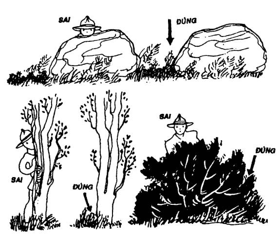
- Có thể giắt thêm lá cây trên người để tăng thêm phần hoà nhập, khó bị phát hiện.
Đối với các thợ săn chuyên môn, họ có thể tiếp cận một số loài chim thú bằng cách giả tiếng kêu của chúng bằng các loại “kèn”, hay dụng cụ hỗ trợ, hoặc bằng chính giọng của họ (nhưng lưu ý các bạn là phải giả cho thật giống, bằng không thì sẽ phản tác dụng). Khi nghe tiếng kêu nầy, các loài chim thú tưởng là đồng loại, sẽ lần mò đến để bị rơi vào bẫy hay là tầm bắn.
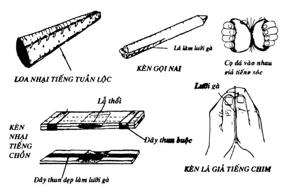
BẮN HẠ
Những người chưa quen săn bắn, khi tiếp cận con mồi ở cự ly gần thì tim đập mạnh, run tay, bàn tay nhớp nháp mồ hôi… Các bạn hãy hít sâu vào rồi thở ra nhè nhẹ vài lần để cho bình tĩnh trở lại. Nếu không, thì cho dù các bạn có súng vẫn có thể bắn trượt chứ đừng nói tới cung, nỏ hay lao, mác…
Nếu có súng, với các con thú lớn, các bạn hãy bắn vào đầu, xương cổ, xương bả vai…
Nếu sử dụng cung nỏ với tên tẩm độc, (Xin xem phần TẨM ĐỘC) thì hãy bắn vào vùng gần tim.
Trường hợp thú bị thương bỏ chạy, các bạn hãy thận trọng bám theo vết máu, vì nếu là thú dữ, khi bị truy đuổi gắt, chúng sẽ ẩn nấp và bất thần quay lại tấn công chúng ta… Cho dù bạn đã thấy con thú nằm chết, cũng phải thận trọng, vì có thể chúng chỉ giả vờ, hoặc có phản xạ sau cùng trước khi chết, cũng rất nguy hiểm (nhất là thú dữ). Hãy cẩn thận tiến tới từ từ trong tư thế “sắp sẵn”, dò thử bằng cách đứng từ xa ném đá vào chúng, hay lấy sào dài khều vào mõm, cho đến khi biết chắc chúng đã chết.
Săn ban ngày, ngoài việc lùng sục tìm kiếm, các bạn còn có thể phục kích ở những nơi chim thú thường qua lại, nhất là các điểm có dấu vết của chúng thường lui tới để uống nước. Rất dễ chủ động bắn hạ. Nhưng các bạn phải ẩn nấp dưới gió và nguỵ trang thật kỹ.
SĂN BẮN BAN ĐÊM
Là một lối săn rất hiệu quả, nhưng đòi hỏi các bạn phải thuộc đường và có đèn (tối thiểu là đèn pin cầm tay). Trong đêm tối, qua phản xạ của ánh đèn, đôi mắt của các loài thú sáng rực lên. Với kinh nghiệm dày dạn, những người thợ săn có thể phân biệt được đó là giống thú gì qua màu mắt phản chiếu, khoảng cách giữa đôi mắt, kích cỡ của mắt, và sự cử động, nhấp nháy… (thông thường thì các loài thú ăn cỏ, ánh mắt phản chiếu màu hồng. Loài thú ăn thịt thì ánh mặt phản chiếu màu xanh… nhưng đây cũng không phải là công thức.) Để hạ con thú, người ta sẽ bắn thẳng vào giữa đôi mắt đó. Nhưng tác xạ ban đêm là một kỹ thuật, phải qua quá trình luyện tập, và tích luỹ kinh nghiệm, chứ không dễ dàng như nhắm bắn ban ngày.
Nếu như không có đèn, các bạn chỉ có thể tìm chỗ ẩn nấp để phục kích ngay trước khi trời sụp tối. Tuyệt đối không nên đi lùng sục vào ban đêm, rất nguy hiểm.
VŨ KHÍ – CÔNG CỤ
Để săn bắn các loài thú, chúng ta cần phải có ít nhất là một trong những vũ khí hoặc công cụ sau đây:
Súng:
Là một loại vũ khí kỹ thuật cao, được sản xuất ở những nhà máy lớn. Súng có thể sát thương ở tầm xa (có loại trên 300m). Rất hiệu quả trong việc săn bắn. Nhưng không phải lúc nào chúng ta cũng có sẵn.
Cung – Nỏ (ná):
a) Cung: Là một loại vũ khí dễ chế tạo, nhưng khá hiệu quả với việc săn bắn tầm xa (trong vòng 50m). Để săn chim và các loại thú nhỏ. Muốn săn thú lớn, các bạn phải biết cách tẩm độc đầu mũi tên (xin xem phần TẨM ĐỘC).
Để làm cung, trước tiên, các bạn chọn một thân cây hay cành cây thật dẻo, cứng, như cò ke, tre già, bời lời… để đẽo thành cánh cung hình hơi bán nguyệt, vừa tay cầm. Giữa lớn, hai đầu nhỏ dần. Ở mỗi đầu, có khắc lõm một chút để buộc dây cung.
Dây cung là những sợi dây thật chắc, được làm từ dây dù, sợi của vỏ cây gai, vỏ cây da… xe lại, hay từ da thú đã được xử lý…
Dây cung chỉ căng lên khi nào cần sử dụng, để cho cánh cung không yếu vì bị căng liên tục.
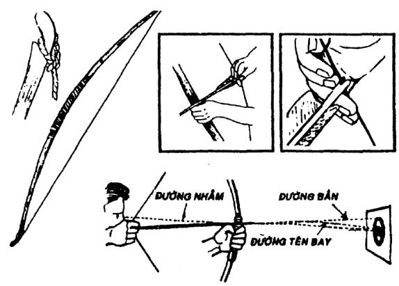
Mũi tên
Mũi tên được làm từ những cây cứng và thẳng, dài từ 65 – 75 cm. Đầu chuốt nhọn và trui vào lửa cho thêm cứng. Để tăng thêm phần hiệu quả, người ta có thể gắn thêm ở đầu mũi tên những vật cứng và sắt nhọn bằng đồng, thép, sắt, xương, thuỷ tinh, mảnh đá…
Chuôi tên được cột bằng 3 lống ống của các loại chim lớn. Lông nầy được xé bỏ bên phần nhỏ, cắt gọn và dùng dây nhỏ, chắc, để cột, ghép, làm sao cho khi bắn không bị vướng vào cánh cung hay bàn tay xạ thủ. Hoặc được xếp bằng lá dừa, lá kè, lá buông…
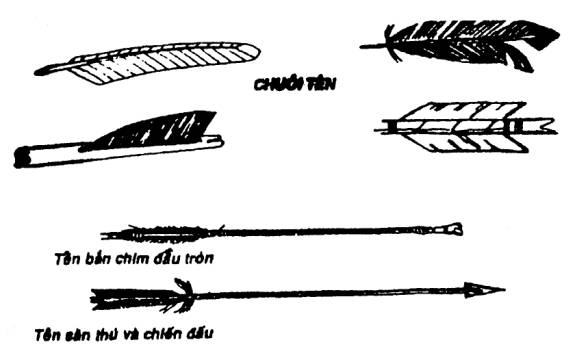
Khi bắn, tay trái các bạn cầm cánh cung (nếu các bạn thuận tay phải). Dùng hai ngón tay (trỏ và giữa) của bàn tay phải, kẹp cuôi tên tra vào dây cung đưa ngang lên tầm nhắm. Vì mũi tên sẽ bay vòng cầu cho nên các bạn phải đưa mũi tên chếch lên phía trên tầm nhắm một chút.
b) Nỏ (ná): Là vũ khí biến thể từ cây cung, nhưng được gắn vào một cái báng gọi là thân ná và có một chốt lẫy gọi là cò. Trên thân ná có khe để đặt cố định mũi tên.
Mũi tên của ná thì nhỏ và ngắn hơn tên của cung (khoảng 30 – 40cm) Chuôi được kẹp bằng lá buông, lá kè… và cũng có thể được tẩm thuốc độc.
Ná tuy không nhanh và linh động bằng cung, nhưng ná bắn chính xác hơn, nhất là đối với những người không chuyên nghiệp.
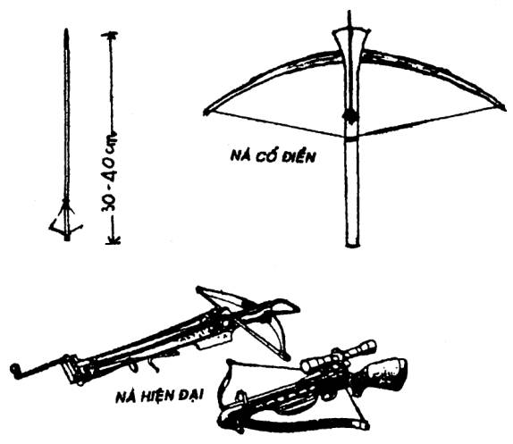
Ổng thổi (xì đồng):
Làm bằng một ống kim loại, nhựa cứng hay một đoạn trúc đã được thông mắt một cách rất công phu, thật thẳng. Dài khoảng 60 – 120 cm. Có lỗ đường kính từ 8 – 12 mm.
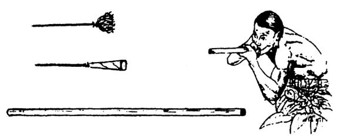
Để sử dụng, người ta nhét vào đầu ống một mũi tên nhỏ có tẩm độc. Chuôi tên được cột bằng các loại lông mao rất mịn như lông thỏ, chồn, cáo… hoặc được quấn bằng lá hay giấy hình loa kèn. Nếu làm đúng kỹ thuật, khi thổi mạnh, mũi tên sẽ bay đi rất nhanh và chính xác, có thể sát thương trong vòng 20m trở lại.
Lao ném tay:
Là một đoạn cây cứng, dài khoảng 1,2 – 2,5 m, vừa tay cầm và đủ nặng để có thể ném đi xa. Một đầu được đẽo cho thật nhọn, trui sơ trên lửa ngọn. Đầu nhọn nầy có thể thay thế bằng một con dao, mũi mác, cây sắt hay một đoạn xương được mài nhọn…
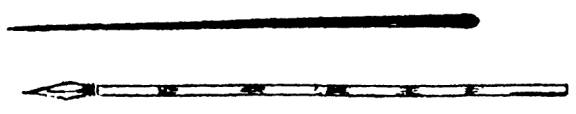
Muốn sử dụng lạo cho có hiệu quả, các bạn phải luyện tập để ném được xa, mạnh và trúng đích. Ngoài sức khoẻ, các bạn cũng phải lưu ý đến độ thăng bằng của lao, để khi ném, lao không bay vòng vèo trong không khí. Sử dụng lao cần phải tiếp cận thật gần với con mồi, rồi bất ngờ ném thật mạnh vào bả vai trước, con vật sẽ quỵ xuống, không chạy được. Các bạn hãy bồi thêm những ngọn lao khác (khi đi săn những thổ dân thường mang theo 3 – 4 ngọn lao).
Boomerang
Đây là loại vũ khí độc đáo của thổ dân châu Úc, có hình cong, được uốn vênh như cánh quạt, làm bằng gỗ. Qua quá trình luyện tập kết hợp với trực giác, người ta thay đổi góc ném, lực ném và đường ném, để khi ném boomerang đi, nếu không trúng mục tiêu, thì boomerang sẽ quay trở về với người ném. Muốn ném cho hiệu quả, các bạn phải biết cách làm một boomerang, và phải tập ném rất lâu.
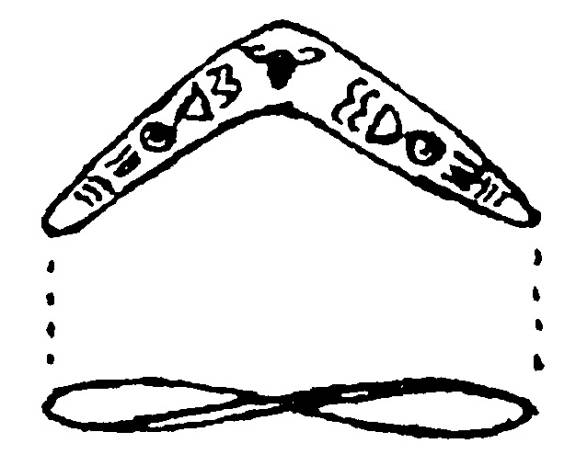
Bola
Người Eskimo dùng bola để săn chim đang bay và thú chạy. Bola được làm từ những sợi dây dài khoảng 1m, một đầu cột lại với nhau, một đầu cột túi cát nặng vừa tay.
Khi ném, họ cầm chỗ cột 3 sợi dây và quay trên đầu để lấy đà, rồi ném đón đầu chim đang bay hay thú đang chạy. Lực quán tính sẽ làm cho bola quấn vào cánh của chim hay là chân của thú.
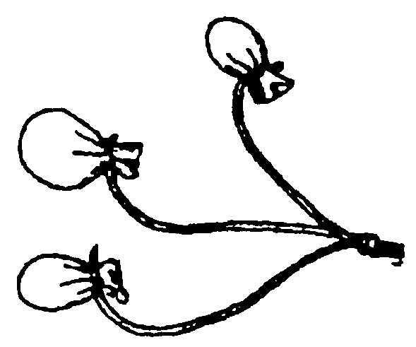
Chỉa
Là một loại vũ khí dễ chế tạo và dễ sử dụng. Khá hiệu quả khi săn bắt cá, bò sát, thú nhỏ… cũng như khi tự vệ. Chỉa thường có ngạnh hay ngàm để giữ con vật bị đâm lại cho khỏi tuột. Các bạn có thể chế tạo đầu chỉa bằng sắt thép, gỗ cứng, xương… như hình dưới đây.
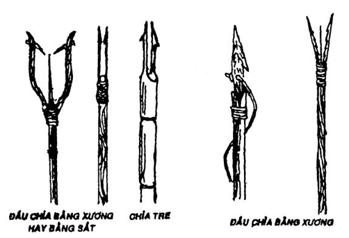
Các bạn cũng có thể dùng một khúc tre già, một đầu chẻ nhỏ cỡ bằng chiếc đũa, chuốt nhọn từng cây một. Dùng các mảnh trẻ hay gỗ nhỏ chêm cho loe ra, hơ sơ vào lửa ngọn, ta có một cái chỉa đa năng dùng để đâm cá, và các động vật nhỏ một cách dễ dàng mà không cần phải có tay nghề cao.
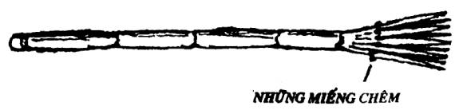
TẨM ĐỘC MŨI TÊN
Để săn các loại thú lớn, có sức khoẻ, chúng ta cần tẩm một số tên dành riêng. Công việc nầy cần phải làm thật cẩn thận, vì nó là con dao hai lưỡi.
Các chất độc để tẩm vào tên thường được lấy từ thực vật hay động vật hoặc chế biến từ các hoá chất…
CHẤT ĐỘC LẤY TỪ THỰC VẬT.
Người ta lấy nhựa của cây Nổ Tiển Tử (Antiris toxicaria Lesch). Thuộc họ dâu tằm (Moraceae), còn gọi là cây Sui, để tẩm vào mũi tên.
Là một loại cây cao lớn (khoảng 30m), cây Sui mọc hoang nhiều ở rừng núi Việt Nam, Trung Quốc, Lào, Ấn Độ, Indonêxia, Malaixia…
Người ta lấy nhựa bằng cách băm vỏ cây cho nhựa chảy ra. Những người đi lấy nhựa phải là người khoẻ mạnh, không bị các vết sây sát, trầy sướt… vì nếu để nhựa Sui dính vào những nơi đó có thể vong mạng.
Những con vật bị trúng tên tẩm nhựa Sui, gần như bị chết ngay tức thì, dù có chạy cũng không xa. Tuy nhiên, thịt các con vật nầy vẫn mềm mại và ăn được.
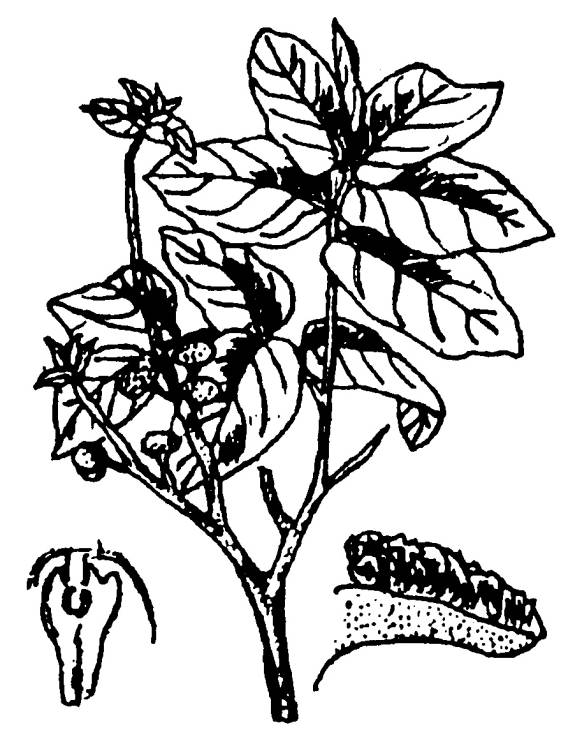
BÀI THUỐC TẨM TÊN ĐỘC CỦA NGƯỜI CHÂU RO
1. Sừng dê (Cồng cộng)
2. Mã tiền (Củ chi)
3. Lá Két
4. Trái Giấy
5. Thuốc Rê (thuốc hút loại nặng)
Mỗi thứ một nắm, dùng nồi đất mới (không được dùng nồi kim loại) cho vào.
Nước nhất: Đổ nước lạnh vừa ngập, nấu trên lửa nhỏ cho đến khi còn 1/3, rót ra trong một thau bằng đất hay nhựa thật sạch.
Nước hai: Đổ nước lạnh vào lại nấu như nước nhất.
Nước thuốc: Hai nước trên đổ chung lại nấu cho đến khi hơi sền sệt là được (không được quá sệt, vì khi nguội sẽ bị đông cứng không sử dụng được). Nhúng đầu các mũi tên vào, lăn tròn rồi đem ra để nguội.
Khi trúng tên tẩm độc nầy, con mồi sẽ bỏ chạy một đoạn (xa gần tuỳ theo thú lớn hay nhỏ, mạnh hay yếu), nhưng chúng sẽ nhanh chóng kiệt sức, và phải dừng lại để ói mửa trước khi chết. Những người thợ săn lắng nghe tiếng ói mửa của con thú để phát hiện ra chúng. Loại thuốc nầy còn làm cho con thú dãy dụa rất mạnh trước khi chết (do tác dụng của mã tiền), cho nên dù con mồi có bị vướng ở trên cây cũng phải rơi xuống đất, giúp người thợ săn dễ dàng thu nhặt.
Ghi chú: Đây là một bài thuốc bí truyền của người Châu Ro, khi tiến hành pha chế, họ luôn luôn tuân thủ một số nghi thức thần bí như: Chỉ đi một mình, và không báo cho bất cứ một ai biết. Khi tìm thấy nguyên liệu, phải làm nghi thức trước khi thu hái. Nấu thuốc một mình trong rừng vắng, nếu bị ai bắt gặp mẻ thuốc đó coi như bỏ…
CHẤT ĐỘC CURARE:
Là một chất độc bí truyền, bắt nguồn từ một số dân tộc vùng Nam Mỹ (Amazon). Đặc điểm của curare là độ độc rất cao, nếu đi vào máu là chết ngay, nhưng gần như không độc khi ăn uống, cho nên thịt của con thú bị trúng tên vẫn có thể ăn được mà không sợ bị ngộ độc. Có nhiều cách để điều chế curare từ nhiều cây khác nhau.
Ở Việt Nam, chúng ta cũng có những cây có thể điều chế curare như cây Chondodendron tomentosum Ruiz Pav, thuộc họ Tiết Dê (Menis permaceae). Cây Strychnos Cartelnaci Weld thuộc họ Mã Tiền (Loganiaceae)…
Muốn chế curare, người ta cạo vỏ cây tươi của các cây trên, rồi dùng cối xay nhỏ, cho thêm nước vào khuấy đều, lọc, rồi cô trên lửa nhẹ trong nồi đất nung. Thỉnh thoảng, nếm thử xem đủ đắng chưa, curare càng đắng càng độc.
Những con thú trúng tên có tẩm curare ít khi chạy được quá 100m. Cho dù đó là sư tử, hổ hay gấu…
CHẤT ĐỘC LẤY TỪ ĐỘNG VẬT:
Có rất nhiều loại ếch độc trong các đầm lầy ở Nam Mỹ. Các tuyến chất độc nằm ở ngoài da có màu rất sặc sỡ của chúng. Loại chất độc nầy rất mạnh, thổ dân dùng để tẩm đầu các loại tên.
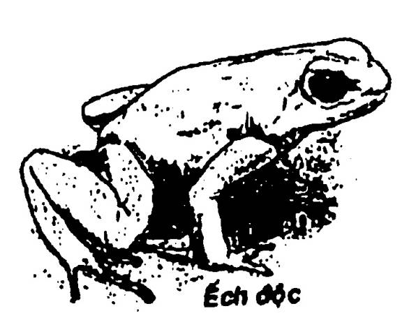
Người ta cũng sử dụng chất độc từ một số nọc rắn độc, tuy hiếm hoi nhưng khá hiệu quả, thường dùng trong chiến đấu.
Bộ tộc Calahari ở Nam Phi còn dùng ấu trùng cực độc của một loại bọ lá để bịt đầu tên.
Ngoài ra còn vô số chất độc bí truyền của các thổ dân và các dân tộc (kể cả các dân tộc ít người ở Việt Nam, mà người ta giữ rất bí mật công thức pha chế.)